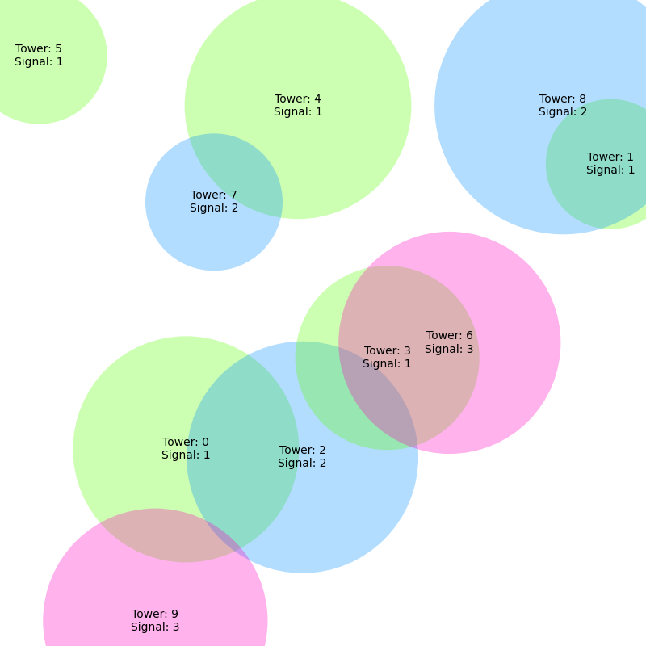
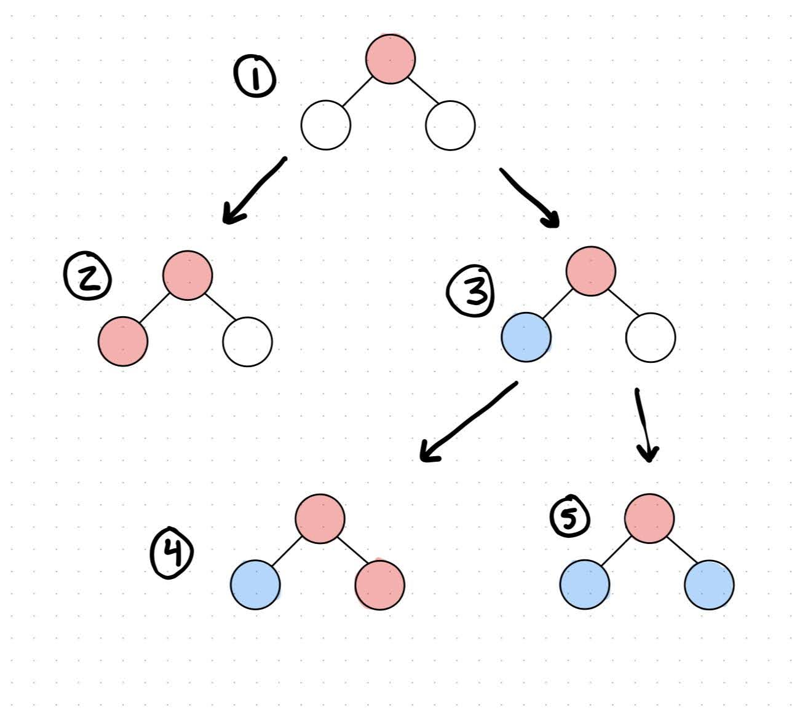

Signal Allocation
A full description of my approach to solve this problem.
Intro
In the following write-up, I delve into the python based algorithm I've developed to address the signal allocation problem. Given a set of radio towers with a certain radius of coverage, this algorithm must ensure that overlapping towers each have different signals so that there is no interference between radio signals. The real world applications of this algorithm are very relevant and the need to perform this analysis may be crucial for real time operating systems.
The Setup
To begin I developed theTowerclass which has 4 attributes. Atower_idwhich is a unique identifier for each tower, a positionwhich is a tuple containing the coordinates of our tower, power which represents the radius of our tower signal, and signalwhich holds the value of the signal which is just an integer. From this basic class, I then developed theTowersclass which holds a list of all Tower objects in an attributetowers. The instantiation of this class can either randomly generate towers or generate them using a specific formatted input parameter. The initiation runs in O(n) time where n represents the number of towers. We then defined several useful methods including add_tower()andremove_tower()which are straightforward. It gets a bit more interesting withget_overlapping_towers(tower)which gets all towers that overlap with the input tower. This has a TC of O(n). The get_overlaps() function also takes advantage of this function by calling it on each tower and then adding those overlaps to a list of complete overlaps which has a TC of O(n2). The full list of methods with their respective time complexity and auxiliary space complexity is shown in the table below.
| Method Name | Time Complexity | Space Complexity |
|---|---|---|
init |
O(n) | O(n) |
add_tower |
O(n) | O(1) |
remove_tower |
O(n) | O(1) |
get_overlaps |
O(n2) | O(n2) |
get_overlapping_towers |
O(n) | O(n) |
get_towers |
O(1) | O(1) |
get_num_towers |
O(1) | O(1) |
visualize_towers |
O(n) | O(n) |
The Algorithm
Now that we have the right tools to use for our actual signal allocation problem we can dive into the meat of the algorithm. I created a SignalAllocation class that first initializes a towers class using the given input parameters. Additionally, this instantiation defines a max_allowed_radio_signalswhich is a limit to the number of signals we have available to us in order to solve our algorithm. The last notable aspect of the initiation is that if the number of towers is greater than 970, we change the maximum allowable recursion depth of our system to whatever the number of towers is plus 30. Since my algorithm uses recursion to solve the signal allocation problem and the default recursion depth is 1000, I wanted to ensure that the algorithm would work for tower numbers greater than 1000. The 970 comes from the fact that there seems to be roughly 30 additional recursive calls before we even get to the algorithm. This may vary depending on the way the functions are called or tested.
My approach to this signal allocation problem was to essentially transform my tower layout into a list of graphs where each disjoint set of overlapping towers is a graph. Each tower of that graph is a node and overlapping towers would be connected with an edge. Once this data transformation has been applied, we just need to solve the graph coloring problem or M-coloring problem in which no two adjacent nodes have the same color or in our case the same signal. The create_mapping() method is the one called to solve the signal allocation problem but it takes advantage of several helper functions that should be explained first.
The first of these helper functions is the get_towers_as_graph() method which essentially iterates through each tower in the tower list and performs a BFS on the unexplored towers using that tower as the root node. Through this BFS we are able to construct a graph where the nodes are towers and the edges of each node are the towers that overlap with it. Once the BFS is done we check the next tower to see if it has been visited or not. The point of this is to account for the case of having two or more disjoint sets of overlapping towers. So if a tower has not been visited, it must be part of a new graph so we perform another BFS with that tower as the root node. These disjoint graphs are then added to a list of graphs and set equal to the class attribute graph_list. In the figure to the left we can see the tower layout with each tower number and signal in each circle. Below we have the graph_list generated using a list of python ditionaries where each node is represented by the tower id. Note that in the actual graph implementation these dictionary keys and elements are the Tower objects themselves, but I converted them into their keys for demonstration purposes.
Graph List Generated:[{0: [2, 9], 2: [0, 3, 6, 9], 9: [0, 2], 3: [2, 6], 6: [2, 3]}, {1: [8], 8: [1]}, {4: [7], 7: [4]}, {5: []}]
We have four separate dictionaries which makes sense since we have four disjoint sets of towers shown above. We can see that for the first dictionary, node 0 has edges to 2 and 9 and it indeed overlaps with both 2 and 9. Looking at the next entry in the dictionary, 2 overlaps with 0, 3, 6 and 9 which matches up with the image. The same goes for the rest of the dctionary. The next two dictionaries both have two entries where each tower overlaps with the other. They are disjoint from eachother and therefore have their own dictionary. The final dictionary is the lone tower 5 which is a single entry with no edges. The results match exactly what we expect.
Once we have our graph_list attribute set, we iterate through each graph and call the create_mapping_helper method which is the recursive part. To save memory in each call I pass in three parameters: (1) graph_index which is an integer used to index into the graph_list attribute, (2) tower which is the tower object we are checking, and (3) tower_index which is the index into the graph after converting the graph into a list of keys. Since the towers are ordered in the graph in the same order they are found, we know that the adjacent keys in the graph list overlap so we can iterate to the next tower index. The base case of this function checks if our tower_index is at the end of the graph list and if so we iterate through the different available signals and call our last helper function, is_valid_signal which essentially just checks if any of the adjacent/overlapping towers have the same signal as the input tower and returns either True or False. From this base case we either return True and continue or False and try a different signal. If at any point the recursive function return is False which happens when no signals are valid, we reset the tower’s signal to 0 and try again. If none of the signals work at that level we recurse back up to the previous level. This is known as back-tracking. A simple example of this algorithm is shown above where we start at (1) and try setup (2) but see that we can’t have two reds next to each other, so we move over to (3). This is a valid layout so we would call our helper function again and try the red signal first in which case its invalid and then we try the blue and it works. Back-tracking is not specifically shown in this example but would be in more complex graphs where we are at a very low depth and must backtrack all the way up until a valid solution is found. The time and auxilary space complexity of this class is shown below for each class method.
| Method Name | Time Complexity | Space Complexity |
|---|---|---|
init |
O(n) | O(n) |
get_towers_as_graph |
O(n2) | O(n2) |
is_valid_signal |
O(n) | O(1) |
create_mapping_helper |
O(s*n2) | O(1) |
create_mapping |
O(s*n2) | O(1) |
get_towers |
O(1) | O(1) |
get_num_radio_signals |
O(n) | O(1) |
is_valid |
O(n2) | O(1) |
The get_towers_as_graph function is O(n2) since at worst case every tower overlaps with every other tower therefore making the BFS search O(n2) and then every tower would have already been visited so the outside loop would be O(1). Creating this graph list would also use O(n2) auxiliary space since for every n towers there would be n entries into their list of adjacencies. The create_mapping_helper> function is O(s*n2) where n is the number of towers and s is the max number of signals. This is because we iterate through s signals, then check for n overlapping towers and recurse at least n times. The create_mapping function would then be O(n2) for the get_towers_as_graph + O(s*n2) for the helper so we have O(s*n2).
In Conclusion
This algorithm is relatively efficient but can run into trouble with very large data sets. If there are large disjoint sets of towers, parallelization could be used very effectively to solve this problem. My approach to solve the signal allocation problem was to construct the data in a smart way that can effectively solve a more common issue known as the graph-coloring problem. This algorithm has many applications like solving sudoku puzzles, scheduling of taxis and even register allocation in compilers. I hope this write-up was able to give you some insight on my approach to this problem.